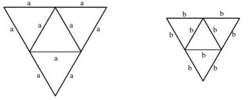

Matura 2014 grudzień
Liczba \( 0{,}6 \) jest jednym z przybliżeń liczby \( \frac{5}{8} \). Błąd względny
tego przybliżenia wyrażony w procentach jest równy
A.\( 0{,}025\%\)
B.\( 2{,}5\% \)
C.\( 0{,}04\% \)
D.\( 4\% \)
D
Dany jest okrąg o środku \(S=(−6,−8)\) i promieniu \(2014\). Obrazem tego okręgu w
symetrii osiowej względem osi \(Oy\) jest okrąg o środku w punkcie \(S_1\). Odległość między
punktami \(S\) i \(S_1\) jest równa
A.\( 12 \)
B.\( 16 \)
C.\( 2014 \)
D.\( 4028 \)
A
Rozwiązaniami równania \((x^3−8)(x−5)(2x+1)=0\) są liczby
A.\( -8;-5;1 \)
B.\( -1;5;8 \)
C.\( -\frac{1}{2};2;5 \)
D.\( -\frac{1}{2};5;8 \)
C
Cena towaru została podwyższona o \( 30\% \), a po pewnym czasie nową, wyższą cenę
ponownie podwyższono, tym razem o \( 10\% \). W rezultacie obu podwyżek wyjściowa cena towaru
zwiększyła się o
A.\( 15\%\)
B.\( 20\%\)
C.\( 40\%\)
D.\( 43\%\)
D
Dane są dwie funkcje określone dla wszystkich liczb rzeczywistych \( x \) wzorami
\( f(x)=-5x+1 \) oraz \(g(x) = 5^x\). Liczba punktów wspólnych wykresów tych funkcji wynosi
A.\(3\)
B.\(2\)
C.\(1\)
D.\(0\)
C
Wyrażenie \( (3x+1+y)^2 \) jest równe
A.\(3x^2+y^2+1\)
B.\(9x^2+6x+y^2+1\)
C.\(3x^2+y^2+6xy+6x+1\)
D.\(9x^2+y^2+6xy+6x+2y+1\)
D
Połowa sumy \(4^{28}+4^{28}+4^{28}+4^{28}\) jest równa
A.\(2^{30} \)
B.\(2^{57} \)
C.\(2^{63} \)
D.\(2^{112} \)
B
Równania \( y=-\frac{3}{4}x+\frac{5}{4} \text{ oraz } y=-\frac{4}{3} \) opisują
dwie proste
A.przecinające się pod kątem o mierze \( 90 ^\circ \).
B.pokrywające się.
C.przecinające się pod kątem różnym od \( 90 ^\circ \).
D.równoległe i różne.
C
Na płaszczyźnie dane są punkty \( A=( \sqrt{2}, \sqrt{6} ) \text{, }\ B=(0, 0)
\text{ i }\ C=(\sqrt{2}, 0)\) . Kąt \( BAC \) jest równy
A.\(30^\circ \)
B.\(45^\circ \)
C.\(60^\circ \)
D.\(75^\circ \)
A
Funkcja \( f \) określona dla wszystkich liczb całkowitych dodatnich,
przyporządkowuje liczbie \( x \) ostatnią cyfrę jej kwadratu. Zbiór wartości funkcji \( f \) zawiera
dokładnie
A.\( 5 \) elementów
B.\( 6 \) elementów
C.\( 9 \) elementów
D.\( 10 \) elementów
B
Ekipa złożona z \( 25 \) pracowników wymieniła tory kolejowe na pewnym odcinku w
ciągu \( 156 \) dni. Jeśli wymianę torów kolejowych na kolejnym odcinku o tej samej długości trzeba
przeprowadzić w ciągu \( 100 \) dni, to, przy założeniu takiej samej wydajności, należy zatrudnić do
pracy o
A.\( 14 \) osób więcej.
B.\( 17 \) osób więcej.
C.\( 25 \) osób więcej.
D.\( 39 \) osób więcej.
A
Z sześcianu \( ABCDEFGH \) o krawędzi długości \( a \) odcięto ostrosłup \( ABDE \)
(zobacz rysunek).  Ile razy objętość
tego ostrosłupa jest mniejsza od objętości pozostałej części sześcianu?
Ile razy objętość
tego ostrosłupa jest mniejsza od objętości pozostałej części sześcianu?
Ile razy objętość
tego ostrosłupa jest mniejsza od objętości pozostałej części sześcianu? A.\( 2 \) razy
B.\( 3 \) razy
C.\( 4 \) razy
D.\( 5 \) razy
D
W układzie współrzędnych narysowano część paraboli o wierzchołku w punkcie \( A=(2,
4) \), która jest wykresem funkcji kwadratowej \( f \).  Funkcja \( f \) może być opisana wzorem
Funkcja \( f \) może być opisana wzorem
Funkcja \( f \) może być opisana wzorem A.\(f(x)=(x-2)^2+4 \)
B.\(f(x)=(x+2)^2+4 \)
C.\(f(x)=-(x-2)^2+4 \)
D.\(f(x)=-(x+2)^2+4 \)
C
Punkty \(A=(-6-2\sqrt{2},\ 4-2\sqrt{2})\), \(B=(2+4\sqrt{2},\ -6\sqrt{2})\),
\(C=(2+6\sqrt{2},\ 6-2\sqrt{2})\) są kolejnymi wierzchołkami równoległoboku \( ABCD \). Przekątne
tego równoległoboku przecinają się w punkcie
A.\(S=(-1+4\sqrt{2},\ 5-5\sqrt{2}) \)
B.\(S=(-2+\sqrt{2},\ 2-4\sqrt{2}) \)
C.\(S=(2+5\sqrt{2},\ 3-4\sqrt{2}) \)
D.\(S=(-2+2\sqrt{2},\ 5-2\sqrt{2}) \)
D
Liczba \( \sin 150^\circ \) jest równa liczbie
A.\( \cos 60^\circ \)
B.\( \cos 120^\circ \)
C.\( \operatorname{tg} 120^\circ \)
D.\( \operatorname{tg} 60^\circ \)
A
Na ścianie kamienicy zaprojektowano mural utworzony z szeregu trójkątów
równobocznych różnej wielkości. Najmniejszy trójkąt ma bok długości \( 1 \) m, a bok każdego z
następnych trójkątów jest o \( 10 \) cm dłuższy niż bok poprzedzającego go trójkąta. Ostatni trójkąt
ma bok długości \( 5{,}9 \) m. Ile trójkątów przedstawia mural?
A.\( 49 \)
B.\( 50 \)
C.\( 59 \)
D.\( 60 \)
B
Dany jest trójkąt równoramienny, w którym ramię o długości \( 20 \) tworzy z
podstawą kąt \( 67{,}5^\circ \). Pole tego trójkąta jest równe
A.\( 100\sqrt{3} \)
B.\( 100\sqrt{2} \)
C.\( 200\sqrt{3} \)
D.\( 200\sqrt{2} \)
B
Na rysunkach poniżej przedstawiono siatki dwóch ostrosłupów.  Pole powierzchni całkowitej
ostrosłupa o krawędzi \( a \) jest dwa razy większe od pola powierzchni całkowitej ostrosłupa o
krawędzi \( b \). Ile razy objętość ostrosłupa o krawędzi \( a \) jest większa od objętości
ostrosłupa o krawędzi \( b \)?
A.\( \sqrt{2} \)
B.\( 2 \)
C.\( 2\sqrt{2} \)
D.\( 4 \)
C
Na okręgu o środku \( S \) leżą punkty \( A, B, C \text{ i } D \). Odcinek \( AB \)
jest średnicą tego okręgu. Kąt między tą średnicą a cięciwą \( AC \) jest równy \( 21^\circ \)
(zobacz rysunek).  Kąt \( \alpha \)
między cięciwami \( AD \) i \( CD \) jest równy
Kąt \( \alpha \)
między cięciwami \( AD \) i \( CD \) jest równy
Kąt \( \alpha \)
między cięciwami \( AD \) i \( CD \) jest równy A.\( 21^\circ \)
B.\( 42^\circ \)
C.\( 48^\circ \)
D.\( 69^\circ \)
D
Średnia arytmetyczna zestawu danych: \( 3, 8, 3, 11, 3, 10, 3, x
\) jest równa \( 6 \). Mediana tego zestawu jest równa
A.\( 5 \)
B.\( 6 \)
C.\( 7 \)
D.\( 8 \)
A
Dany jest ciąg geometyczny \( (a_n) \), w którym \( a_1=-\sqrt{2},\ a_2=2,\
a_3=-2\sqrt{2} \) . Dziesiąty wyraz tego ciągu, czyli \( a_{10} \), jest równy
A.\( 32 \)
B.\( -32 \)
C.\( 16\sqrt{2} \)
D.\( -16\sqrt{2} \)
A
Ciąg \( (a_n) \) jest określony wzorem \( a_n=\frac{24-4n}{n} \) dla \( n\ge 1 \).
Liczba wszystkich całkowitych nieujemnych wyrazów tego ciągu jest równa
A.\( 7 \)
B.\( 6 \)
C.\( 5 \)
D.\( 4 \)
C
Rzucamy sześć razy symetryczną sześcienną kostką do gry. Niech \( p_i \) oznacza
prawdopodobieństwo wyrzucenia \( i \) oczek w \( i \)-tym rzucie. Wtedy
A.\( p_6=1 \)
B.\( p_6=\frac{1}{6} \)
C.\( p_6=0 \)
D.\( p_6=\frac{1}{3} \)
B
Wskaż liczbę, która spełnia równanie \( 4^x=9 \).
A.\( \log 9-\log 4 \)
B.\( \frac{\log 2}{\log 3} \)
C.\( 2\log_{9}2 \)
D.\( 2\log_{4}3 \)
D
Rozwiąż nierówność: \( -x^2-4x+21\lt 0 \).
\(x\in (-\infty ;-7)\cup (3;+\infty )\)
Uzasadnij, że żadna liczba całkowita nie jest rozwiązaniem równania
\(\frac{2x+4}{x-2}=2x+1\).
Czas połowicznego rozpadu pierwiastka to okres, jaki jest potrzebny, by ze \( 100\%
\) pierwiastka pozostało \( 50\% \) tego pierwiastka. Oznacza to, że ilość pierwiastka pozostała z
każdego grama pierwiastka po \( x \) okresach rozpadu połowicznego wyraża się wzorem \( y={\left (
\frac{1}{2} \right )}^{x} \). W przypadku izotopu jodu \( ^{131}I \) czas połowicznego rozpadu jest
równy \( 8 \) dni. Wyznacz najmniejszą liczbę dni, po upływie których pozostanie z \( 1 \) g \(
^{131}I \) nie więcej niż \( 0{,}125 \) g tego pierwiastka.
\(24\)
Uzasadnij, że jeżeli liczba całkowita nie dzieli się przez \( 3 \), to jej kwadrat
przy dzieleniu przez \( 3 \) daje resztę \( 1 \).
Wartość prędkości średniej obliczamy jako iloraz drogi i czasu, w którym ta droga
została przebyta. Samochód przejechał z miejscowości \( A \) do miejscowości \( C \) przez
miejscowość \( B \), która znajduje się w połowie drogi z \( A \) do \( C \). Wartość prędkości
średniej samochodu na trasie z \( A \) do \( B \) była równa \( 40 \) km/h, a na trasie z \( B \) do
\( C \) - \( 60 \) km/h. Oblicz wartość prędkości średniej samochodu na całej trasie z \( A \) do \(
C \).
\(v=48\) km/h
Zakupiono \( 16 \) biletów do teatru, w tym \( 10 \) biletów na miejsca od \( 1. \)
do \( 10. \) w pierwszym rzędzie i \( 6 \) biletów na miejsca od \( 11. \) do \( 16. \) w szesnastym
rzędzie. Jakie jest prawdopodobieństwo zdarzenia polegającego na tym, że \( 2 \) wylosowane bilety,
spośród szesnastu, będą biletami na sąsiadujące miejsca?
\(\frac{7}{60}\)
W trapezie \( ABCD\ (AB || CD) \) przekątne \( AC \text{ i } BD \) przecinają się w
punkcie \( O \) takim, że \( |AO|:|OC|=5:1 \). Pole trójkąta \( AOD \) jest równe \( 10 \).
Uzasadnij, że pole trapezu \( ABCD \) jest równe \( 72 \). 
Punkty \( A=(3,3) \text{ i } B=(9,1) \) są wierzchołkami trójkąta \( ABC \), a
punkt \( M=(1,6) \) jest środkiem boku \( AC \). Oblicz współrzędne punktu przecięcia prostej \( AB
\) z wysokością tego trójkąta, poprowadzoną z wierzchołka \( C \).
\((-2{,}4;\ 4{,}8)\)
Tworząca stożka ma długość \( 17 \), a wysokość stożka jest krótsza od średnicy
jego podstawy o \( 22 \). Oblicz pole powierzchni całkowitej i objętość tego stożka.
\(P=480\pi \), \(V=600\pi \)